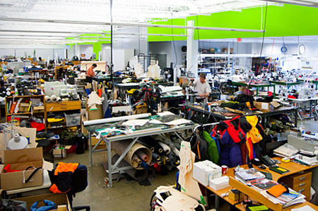
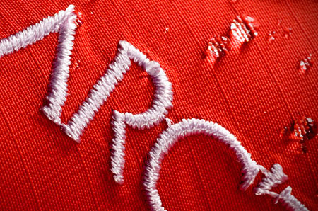
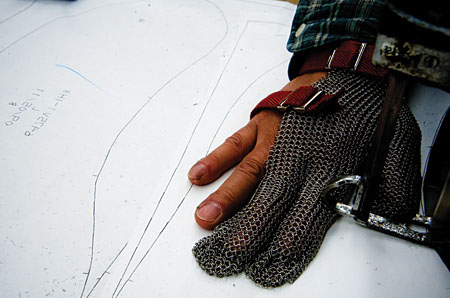

Every time you put on your Arcteryx jacket, pack your Arcteryx backpack, or slip on that Arcteryx harness, you know you are using some of the best outdoor clothing and gear available. The people at Arcteryx take what they do seriously while putting heart and passion into everything that is made. When you hear words like Arcteryx Sidewinder, Arcteryx Theta AR, and Arcteryx Stingray Jacket, you know quality is built in. I told you they were serious about what they do. But don't worry...that only means you end up with the best products possible.
If you're confused about which Arcteryx jacket will best fit your needs, I can assure you that after reading about the jackets, you will feel enlightened and inspired.
Arcteryx fleece – These jackets provide excellent insulation and, depending on the jacket, can be used in all situations ranging from leisure activities to outdoor sports. Some excellent Arcteryx fleece jackets include the Arcteryx Covert Cardigan and the Arcteryx Hyllus Hoody.
Arcteryx insulated jackets – The Arcteryx insulated jackets are great to wear when the temperature drops really low. They are warm and breathable. Some Arcteryx insulated jackets are waterproof while others are windproof. Many of the insulated jackets are made with a GORE-TEX shell for extra protection. Some great Arcteryx insulated jackets include the Arcteryx Atom and Arcteryx Fission.
Arcteryx softshell jackets – These jackets provide excellent protection while allowing you to move freely if you are climbing, skiing and more. Arcteryx softshell jackets can also be layered for added warmth. They are breathable and tend to be wind and water resistant. Some excellent choices include the Arcteryx Gamma and Arcteryx Maverick.
Arcteryx waterproof jackets – The Arcteryx waterproof jackets are some of the best jackets available. They provide excellent warmth, breathability, and water resistance to keep you happy and dry while skiing, alpine climbing and more. A layer of GORE-TEX is built into the Arcteryx waterproof jackets, allowing them to exceed all expectations you may have about the jacket. Some Arcteryx waterproof jackets include the Arcteryx Theta, Arcteryx Sidewinder and the Arcteryx Stinger.
You may also want to check out the Arcteryx sale. I can barely contain my excitement about all the Arcteryx products on sale. Arcteryx jackets, Arcteryx pants, Arcteryx shirts and so much more can be found. High-tail it over there so you can check out the deals.
Here's a short story for you. My GF asked me one time why I like Arcteryx so much. I asked her how she expected me to put something so perfect into words. I told her my Arcteryx backpack fits me so well, and that my Arcteryx Theta AR Jacket perfectly compliments my personality. She got mad at me for never saying anything like that about her. Then she asked me, “If you love Arcteryx so much, why don't you marry it?” I am currently in the process of trying to get a marriage license with Arcteryx. I don't think it will happen, though. The end. This story might not be entirely true.


The most comfortable, fully adjustable, all-around rock-climbing harness available. New, wider Warp Strength Technology (WST) swami belt and fully-adjustable conical leg loops provide supple comfort while hanging on the wall or belaying. A stronger tie-in point adds more strength to a critical area of the harness. The most comfortable, fully adjustable, all-around rock-climbing harness available. New, wider Warp Strength Technology (WST) swami belt and fully-adjustable conical leg loops provide supple comfort while hanging on the wall or belaying. A stronger tie-in point adds more strength to a critical area of the harness. The most comfortable, fully adjustable, all-around rock-climbing harness available. New, wider Warp Strength Technology (WST) swami belt and fully-adjustable conical leg loops provide supple comfort while hanging on the wall or belaying. A stronger tie-in point adds more strength to a critical area of the harness. The most comfortable, fully adjustable, all-around rock-climbing harness available. New, wider Warp Strength Technology (WST) swami belt and fully-adjustable conical leg loops provide supple comfort while hanging on the wall or belaying. A stronger tie-in point adds more strength to a critical area of the harness.



Every Arc'teryx product is engineered to meet the needs of the most demanding athlete. Activity-specific patterning ensures complete freedom of movement, and each product is critically scrutinized and detailed for the intended end use.
- e3D patterning for enhanced range-of-motion
- Snowsports specific outerwear features
- Hoods with quick, one-hand adjustment
- Tri-Dex glove patterning
- Packs with articulated & breathable components


Arc'teryx works closely with textile manufacturers to select and aid in the development of the highest performing and most durable materials available in order to maximize the performance properties of our products.
- GORE-TEX® Pro Shell
- WINDSTOPPER®
- Coreloft™ & Thermatek™ Insulation
- Fortius™ & Polartec® Softshell
- Phasic™ base layer fabrics
- MAPP Merino Wool
- 420ACT™ AC² pack materials
- Watertight™ zippers

Arc'teryx is one of only a few major outdoor industry outerwear brands in North America to have its own domestic North American manufacturing facility. This allows us to readily develop proprietary manufacturing processes, enabling us to efficiently create superior features that other manufacturers simply cannot build.
- Extreme attention to detail
- Laminated construction
- GORE™ Tiny Tape / micro seams
- Die Cut components & pocket openings
- Vapor Thermoformed & Thermoshaped components
- Warp Strength® Technology